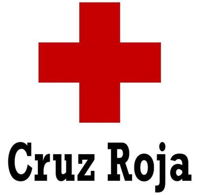

CERTIFICADO
Se consiguio un certificado por parte de la cruz roja en el año 2016.
Estudiante de la Universidad Pedagogica y Tecnologica de Colombia, en tercer semestre de la carrera, atualmente cursando Programación II
Se tienen cualidades de disiplina, responsabilidad y de entender lo que se le enseña rapidamente. Se tiene dificultades en la puntualidad, pero es algo que se puede mejorar si es que se lo proponé.
Gran gusto por los deportes, en especial el futbol y por la música.
Se consiguio un certificado por parte de la cruz roja en el año 2016.
Desde el año 2017 se esta cursando un curso de inlges certificado por la U.P.T.C.
Conocimiento laboral hasta el día de hoy no se tienen.